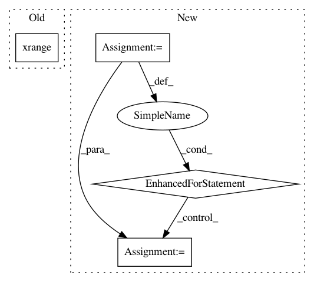

608fff2119f21191352ddf5d96eb82fc1ab099b0,dit/utils/misc.py,,partitions,#,370
Before Change
if not set_:
yield ()
return
for i in xrange(2**len(set_) / 2):
parts = [set(), set()]
for item in set_:
parts[i&1].add(item)
After Change
yield partition
else:
for partition in partitions1( seq ):
partition = frozenset( map(frozenset, partition) )
yield partition
def ordered_partitions(seq, tuples=False):
Generates ordered partitions of elements in `seq`.
In pattern: SUPERPATTERN
Frequency: 3
Non-data size: 4
Instances
Project Name: dit/dit
Commit Name: 608fff2119f21191352ddf5d96eb82fc1ab099b0
Time: 2013-02-25
Author: chebee7i@gmail.com
File Name: dit/utils/misc.py
Class Name:
Method Name: partitions
Project Name: bulik/ldsc
Commit Name: 8b9b58c9bca513856be4e0741a4d378176451243
Time: 2014-05-20
Author: hilaryfinucane@gmail.com
File Name: ldsc/jackknife.py
Class Name: LstsqJackknife
Method Name: __compute_block_vals__
Project Name: metric-learn/metric-learn
Commit Name: e31fb50e9d0af2e42118474f8042751a6c5692f3
Time: 2016-07-13
Author: perimosocordiae@gmail.com
File Name: examples/sandwich.py
Class Name:
Method Name: plot_neighborhood_graph